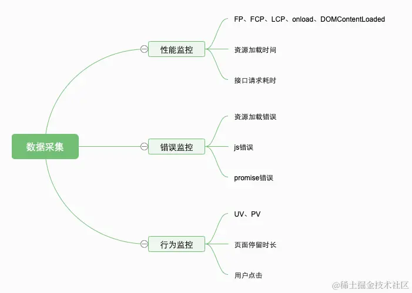
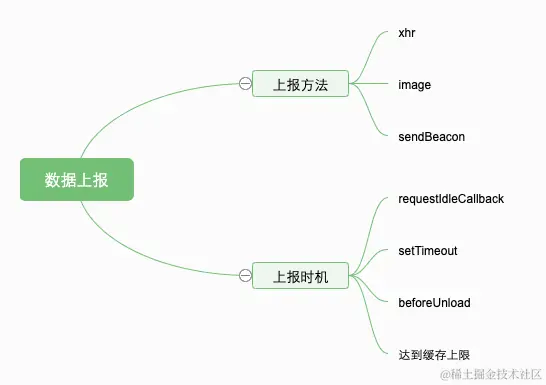

一个完整的前端监控平台包括三个部分：数据采集与上报、数据整理和存储、数据展示；本文只写数据采集与上报部分。


名字很重要，一个好的名字会让使用者很容易记住，会让使用者莫名产生一种自豪感，会更容易传播；如果名字能够切合某种大道，更能带来顺理成章的效果。本文的监控 SDK 就叫四维吧，寓意上帝视角。全写 four-dimension，简写为 FD。
class FourDimension {
constructor() {
this.init();
}
// 初始化
init() {}
}
定义一个 FourDimension 类，目前有构造函数，构造函数无参数。只有 init 方法，用以初始化类。init 方法用以性能、错误、行为数据收集。
业界比较成熟的方案：使用 1x1 像素的 gif 图片上报，本文也是。同时也可以使navigator.sendBeacon，navigator.sendBeacon 是一个用于发送少量数据到服务器的浏览器 API。它有以下几个优点
navigator.sendBeacon 是异步的，它不会阻塞浏览器的其他操作。这对于性能监控来说非常重要，因为都不希望监控的过程影响到页面的性能。navigator.sendBeacon 仍然可以发送数据。这对于捕获和上报页面卸载前的最后一些性能数据来说非常有用。navigator.sendBeacon 发送的请求是低优先级的，它不会影响到页面的其他网络请求。navigator.sendBeacon 的 API 非常简单，只需要提供上报的 URL 和数据，就可以发送请求。与此同时，navigator.sendBeacon 也有一些限制。例如，它只能发送 POST 请求，不能发送 GET 请求。而且，它发送的请求没有返回值，不能接收服务器的响应。
最后，一些旧的浏览器可能不支持 navigator.sendBeacon。因此，在使用 navigator.sendBeacon 时，需要根据实际情况进行兼容性处理。
本文的方案是，优先navigator.sendBeacon，降级使用 1x1 像素 gif 图片，根据实际情况需要采用 xhr。
创建 report.js 增加上传方法
import { isSupportSendBeacon } from "./util";
// 如果浏览器不支持 sendBeacon，就使用图片打点
const sendBeacon = (function () {
if (isSupportSendBeacon()) {
return window.navigator.sendBeacon.bind(window.navigator);
}
const reportImageBeacon = function (url, data) {
reportImage(url, data);
};
return reportImageBeacon;
})();
export function reportImage(url, data) {
const img = new Image();
img.src = url + "?reportData=" + encodeURIComponent(JSON.stringify(data));
}
参考其它文章，上报时机选择对当前页面影响最小的方案
requestIdleCallback/setTimeout 延时上报。将三种方式结合一起上报：
先缓存上报数据，缓存到一定数量后，利用 requestIdleCallback/setTimeout 延时上报。 在页面离开时统一将未上报的数据进行上报。
创建缓存文件 cache.js
import { deepCopy } from "./util";
const cache = [];
export function getCache() {
return deepCopy(cache);
}
export function addCache(data) {
cache.push(data);
}
export function clearCache() {
cache.length = 0;
}
其中 deepCopy
export function deepCopy(target) {
if (typeof target === "object") {
const result = Array.isArray(target) ? [] : {};
for (const key in target) {
if (typeof target[key] == "object") {
result[key] = deepCopy(target[key]);
} else {
result[key] = target[key];
}
}
return result;
}
return target;
}
修改上传文件 report.js
import { addCache, getCache, clearCache } from "./cache";
import config from "../config";
import { isSupportSendBeacon, generateUniqueID } from "./util";
const sendBeacon = (function () {
if (isSupportSendBeacon()) {
return window.navigator.sendBeacon.bind(window.navigator);
}
const reportImageBeacon = function (url, data) {
reportImage(url, data);
};
return reportImageBeacon;
})();
const sessionID = generateUniqueID();
export function report(data, isImmediate = false) {
if (!config.reportUrl) {
console.error("请设置上传 url 地址");
}
const reportData = JSON.stringify({
id: sessionID,
appID: config.appID,
userID: config.userID,
data,
});
if (isImmediate) {
sendBeacon(config.reportUrl, reportData);
return;
}
if (window.requestIdleCallback) {
window.requestIdleCallback(
() => {
sendBeacon(config.reportUrl, reportData);
},
{ timeout: 3000 }
);
} else {
setTimeout(() => {
sendBeacon(config.reportUrl, reportData);
});
}
}
let timer = null;
export function lazyReportCache(data, timeout = 3000) {
addCache(data);
clearTimeout(timer);
timer = setTimeout(() => {
const data = getCache();
if (data.length) {
report(data);
clearCache();
}
}, timeout);
}
export function reportWithXHR(data) {
// 1. 创建 xhr 对象
let xhr = new XMLHttpRequest();
// 2. 调用 open 函数
xhr.open("POST", config.reportUrl);
// 3. 调用 send 函数
xhr.send(JSON.stringify(data));
}
export function reportImage(url, data) {
const img = new Image();
img.src = url + "?reportData=" + encodeURIComponent(JSON.stringify(data));
}
其中 config.js 文件
const config = {
reportUrl: "http://localhost:8000/reportData",
projectName: "fd-example",
};
export function setConfig(options) {
for (const key in config) {
if (options[key]) {
config[key] = options[key];
}
}
}
export default config;
根据最初的规划，性能监控需要收集的数据指标需要有 FP、FCP、LCP、DOMContentLoaded、onload、资源加载时间、接口请求时间。
收集 FP、FCP、LCP、资源加载时间具体是利用浏览器 Performance API。关于 Performance API 可以参考：Performance
FP（First Paint）首次绘制，即浏览器开始绘制页面的时间点。这包括了任何用户自定义的绘制，它是渲染任何文本、图像、SVG 等的开始时间
import { getPageURL, isSupportPerformanceObserver } from "../utils/util";
import { lazyReportCache } from "../utils/report";
export default function observePaint() {
if (!isSupportPerformanceObserver()) return;
const entryHandler = (list) => {
for (const entry of list.getEntries()) {
if (entry.name === "first-paint") {
observer.disconnect();
}
const json = entry.toJSON();
delete json.duration;
const reportData = {
...json,
subType: entry.name,
type: "performance",
pageURL: getPageURL(),
};
lazyReportCache(reportData);
}
};
const observer = new PerformanceObserver(entryHandler);
// buffered 属性表示是否观察缓存数据，也就是说观察代码添加时机比事情触发时机晚也没关系。
observer.observe({ type: "paint", buffered: true });
}
代码中observer.disconnect()是 PerformanceObserver 对象的一个方法，用于停止观察性能指标并断开与回调函数的连接。
事实上
observer.observe({ type: "paint", buffered: true });
包含两种性能指标：first-contentful-paint 和 first-paint。
当调用observer.disconnect()方法时，PerformanceObserver 对象将停止观察性能指标，并且不再接收任何性能指标的更新。与此同时，与回调函数的连接也会被断开，即使有新的性能指标数据产生，也不会再触发回调函数。
这个方法通常在不再需要观察性能指标时调用，以避免不必要的资源消耗。
FCP（First Contentful Paint）：首次内容绘制，即浏览器首次绘制 DOM 内容的时间点，如文本、图像、SVG 等。
看起来 FCP 和 FP 一致，其实还是有区别的
简而言之，FCP 关注的是页面上首次呈现有意义内容的时间点，而 FP 关注的是页面上首次呈现任何可视化内容的时间点。FCP 更关注用户感知的页面加载时间，因为它表示用户可以开始阅读或与页面进行交互的时间点。而 FP 则更关注页面开始渲染的时间点，无论内容是否有意义
import { getPageURL, isSupportPerformanceObserver } from "../utils/util";
import { lazyReportCache } from "../utils/report";
export default function observePaint() {
if (!isSupportPerformanceObserver()) return;
const entryHandler = (list) => {
for (const entry of list.getEntries()) {
if (entry.name === "first-contentful-paint") {
observer.disconnect();
}
const json = entry.toJSON();
delete json.duration;
const reportData = {
...json,
subType: entry.name,
type: "performance",
pageURL: getPageURL(),
};
lazyReportCache(reportData);
}
};
const observer = new PerformanceObserver(entryHandler);
// buffered 属性表示是否观察缓存数据，也就是说观察代码添加时机比事情触发时机晚也没关系。
observer.observe({ type: "paint", buffered: true });
}
LCP（Largest Contentful Paint）：最大内容绘制，即视口中最大的图像或文本块的渲染完成的时间点
import { getPageURL, isSupportPerformanceObserver } from "../utils/util";
import { lazyReportCache } from "../utils/report";
export default function observeLCP() {
if (!isSupportPerformanceObserver()) {
return;
}
const entryHandler = (list) => {
if (observer) {
observer.disconnect();
}
for (const entry of list.getEntries()) {
const json = entry.toJSON();
delete json.duration;
const reportData = {
...json,
target: entry.element?.tagName,
name: entry.entryType,
subType: entry.entryType,
type: "performance",
pageURL: getPageURL(),
};
lazyReportCache(reportData);
}
};
const observer = new PerformanceObserver(entryHandler);
observer.observe({ type: "largest-contentful-paint", buffered: true });
}
DOMContentLoaded：当 HTML 文档被完全加载和解析完成后，DOMContentLoaded事件被触发，无需等待样式表、图像和子框架的完成加载
import { lazyReportCache } from "../utils/report";
export default function observerLoad() {
["DOMContentLoaded"].forEach((type) => onEvent(type));
}
function onEvent(type) {
function callback() {
lazyReportCache({
type: "performance",
subType: type.toLocaleLowerCase(),
startTime: performance.now(),
});
window.removeEventListener(type, callback, true);
}
window.addEventListener(type, callback, true);
}
onload：当所有需要立即加载的资源（如图片和样式表）已加载完成时的时间点
import { lazyReportCache } from "../utils/report";
export default function observerLoad() {
["load"].forEach((type) => onEvent(type));
}
function onEvent(type) {
function callback() {
lazyReportCache({
type: "performance",
subType: type.toLocaleLowerCase(),
startTime: performance.now(),
});
window.removeEventListener(type, callback, true);
}
window.addEventListener(type, callback, true);
}
收集资源加载时间
observer.observe({ type: "resource", buffered: true });
我在想什么是资源加载时间？应该就是下面的entry.duration的。我觉得写监控 SDK 很有意义，可以更加深入的学习浏览器模型。了解浏览器是怎么看待各种 html 文件资源的
import { executeAfterLoad, isSupportPerformanceObserver } from "../utils/util";
import { lazyReportCache } from "../utils/report";
export default function observeEntries() {
executeAfterLoad(() => {
observeEvent("resource");
});
}
export function observeEvent(entryType) {
function entryHandler(list) {
const data = list.getEntries();
for (const entry of data) {
if (observer) {
observer.disconnect();
}
lazyReportCache({
name: entry.name, // 资源名称
subType: entryType,
type: "performance",
sourceType: entry.initiatorType, // 资源类型
duration: entry.duration, // 资源加载耗时
dns: entry.domainLookupEnd - entry.domainLookupStart, // DNS 耗时
tcp: entry.connectEnd - entry.connectStart, // 建立 tcp 连接耗时
redirect: entry.redirectEnd - entry.redirectStart, // 重定向耗时
ttfb: entry.responseStart, // 首字节时间
protocol: entry.nextHopProtocol, // 请求协议
responseBodySize: entry.encodedBodySize, // 响应内容大小
responseHeaderSize: entry.transferSize - entry.encodedBodySize, // 响应头部大小
resourceSize: entry.decodedBodySize, // 资源解压后的大小
startTime: performance.now(),
});
}
}
let observer;
if (isSupportPerformanceObserver()) {
observer = new PerformanceObserver(entryHandler);
observer.observe({ type: entryType, buffered: true });
}
}
这里通过覆写原生 xhr 对象方法，对方法做拦截实现接口时间收集以及上报
import { originalOpen, originalSend, originalProto } from "../utils/xhr";
import { lazyReportCache } from "../utils/report";
function overwriteOpenAndSend() {
originalProto.open = function newOpen(...args) {
this.url = args[1];
this.method = args[0];
originalOpen.apply(this, args);
};
originalProto.send = function newSend(...args) {
this.startTime = Date.now();
const onLoadend = () => {
this.endTime = Date.now();
this.duration = this.endTime - this.startTime;
const { status, duration, startTime, endTime, url, method } = this;
const reportData = {
status,
duration,
startTime,
endTime,
url,
method: (method || "GET").toUpperCase(),
success: status >= 200 && status < 300,
subType: "xhr",
type: "performance",
};
lazyReportCache(reportData);
this.removeEventListener("loadend", onLoadend, true);
};
this.addEventListener("loadend", onLoadend, true);
originalSend.apply(this, args);
};
}
export default function xhr() {
overwriteOpenAndSend();
}
根据最初的规划需要收集资源加载错误、js 错误和 promise 错误。
收集 JavaScript、CSS 和图片的加载错误，使用window.addEventListener监听错误
import { lazyReportCache } from "../utils/report";
import { getPageURL } from "../utils/util";
export default function error() {
// 捕获资源加载失败错误 js css img...
window.addEventListener(
"error",
(e) => {
const target = e.target;
if (!target) return;
if (target.src || target.href) {
const url = target.src || target.href;
lazyReportCache({
url,
type: "error",
subType: "resource",
startTime: e.timeStamp,
html: target.outerHTML,
resourceType: target.tagName,
paths: e.path.map((item) => item.tagName).filter(Boolean),
pageURL: getPageURL(),
});
}
},
true
);
}
收集 JavaScript 错误，可以使用 window.onerror 或者 window.addEventListener('error', callback)
import { lazyReportCache } from "../utils/report";
import { getPageURL } from "../utils/util";
export default function error() {
// 监听 js 错误
window.onerror = (msg, url, line, column, error) => {
lazyReportCache({
msg,
line,
column,
error: error.stack,
subType: "js",
pageURL: url,
type: "error",
startTime: performance.now(),
});
};
}
说明一下window.onerror无法捕获资源加载错误，所以这里可以单独拿来监听 js 错误。
收集 Promise 错误，可以使用 window.addEventListener('unhandledrejection', callback)
import { lazyReportCache } from "../utils/report";
import { getPageURL } from "../utils/util";
export default function error() {
// 监听 promise 错误 缺点是获取不到列数据
window.addEventListener("unhandledrejection", (e) => {
lazyReportCache({
reason: e.reason?.stack,
subType: "promise",
type: "error",
startTime: e.timeStamp,
pageURL: getPageURL(),
});
});
}
为了减少对 html 文件代码的干扰，错误收集可以添加一个缓存代理，具体参考字节前端监控实践。
根据最初的规划，行为数据收集 pv、uv，页面停留时长，用户点击。
收集 pv（Page View，页面浏览量）和 uv（Unique Visitor，独立访客）数据，需要在每次页面加载时发送一个请求到服务器，然后在服务器端进行统计
import { lazyReportCache } from "../utils/report";
import getUUID from "./getUUID";
import { getPageURL } from "../utils/util";
export default function pv() {
lazyReportCache({
type: "behavior",
subType: "pv",
startTime: performance.now(),
pageURL: getPageURL(),
referrer: document.referrer,
uuid: getUUID(),
});
}
这里只能收集了 pv 数据，uv 数据统计需要在服务端进行。
收集页面停留时长，可以在页面加载时记录一个开始时间，然后在页面卸载时记录一个结束时间，两者的差就是页面的停留时长。这个计算逻辑可以放在 beforeunload 事件里做
import { report } from "../utils/report";
import { onBeforeunload, getPageURL } from "../utils/util";
import getUUID from "./getUUID";
export default function pageAccessDuration() {
onBeforeunload(() => {
report(
{
type: "behavior",
subType: "page-access-duration",
startTime: performance.now(),
pageURL: getPageURL(),
uuid: getUUID(),
},
true
);
});
}
收集用户点击事件，可以使用 addEventListener 来监听 click 事件，这里借助了冒泡
import { lazyReportCache } from "../utils/report";
import { getPageURL } from "../utils/util";
import getUUID from "./getUUID";
export default function onClick() {
["mousedown", "touchstart"].forEach((eventType) => {
let timer;
window.addEventListener(eventType, (event) => {
clearTimeout(timer);
timer = setTimeout(() => {
const target = event.target;
const { top, left } = target.getBoundingClientRect();
lazyReportCache({
top,
left,
eventType,
pageHeight:
document.documentElement.scrollHeight || document.body.scrollHeight,
scrollTop:
document.documentElement.scrollTop || document.body.scrollTop,
type: "behavior",
subType: "click",
target: target.tagName,
paths: event.path?.map((item) => item.tagName).filter(Boolean),
startTime: event.timeStamp,
pageURL: getPageURL(),
outerHTML: target.outerHTML,
innerHTML: target.innerHTML,
width: target.offsetWidth,
height: target.offsetHeight,
viewport: {
width: window.innerWidth,
height: window.innerHeight,
},
uuid: getUUID(),
});
}, 500);
});
});
}
将性能数据、错误数据、行为数据入口文件的收集方法在监控类四维init方法内初始化
import performance from "./performance/index";
import behavior from "./behavior/index";
import error from "./error/index";
class FourDimension {
constructor() {
this.init();
}
// 初始化
init() {
performance();
error();
behavior();
}
}
new FourDimension().init();
在具体使用过程中，采用异步加载的方式引入。
如果没有具体数据能够证明这个策略是优的，那么就从理论上选优的。这也是我写这篇文章的理论支撑之一。因为毕竟没有真实数据做验证。
还有一个支撑是先模仿，理解别人的再理出自己的思路；而且写文章也是督促自己学习的一种方式。本文大量参考了前端监控 SDK 的一些技术要点原理分析 这篇文章。写着写着发现关键是数据收集和上报方式，具体上报数据模型以及上报方式需要在真实场景中研究迭代。😭
当然另一个意义也说了，任何事没有反馈则没有进步。监控就是反馈。
另外，我想如果这种监控如果可视化，就如同对人的监控一样，就算是没有警报事件，也能记录被监控对象的各种行为数据。一定会很有有意思。即使没有错误也能有一种可视化画面。